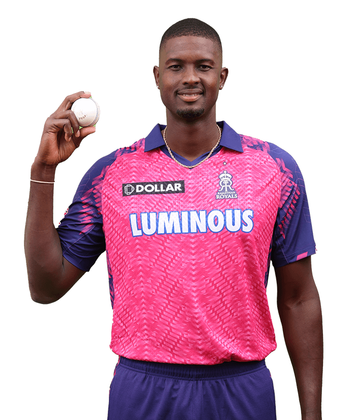
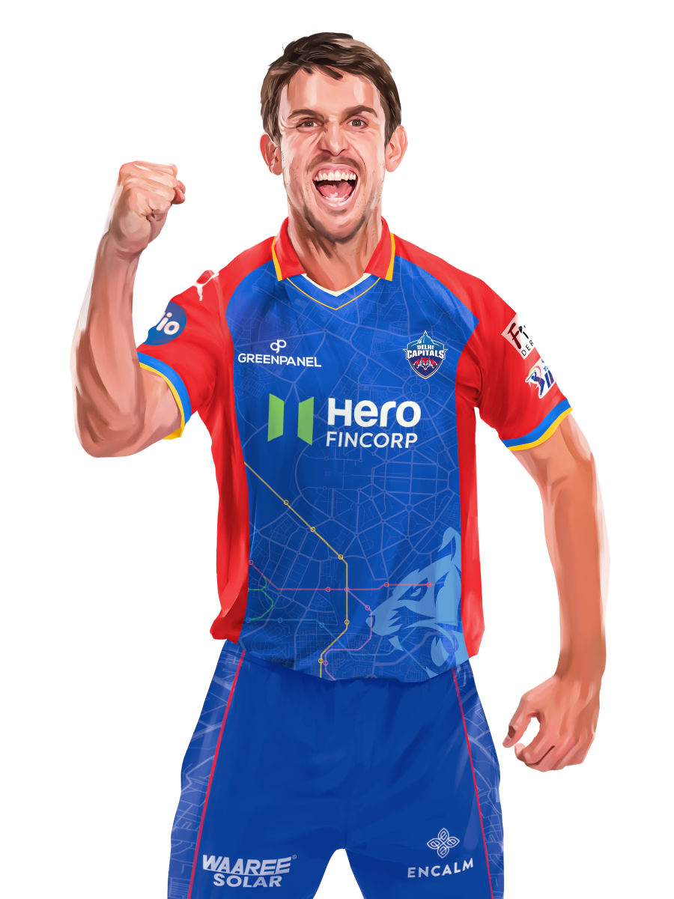
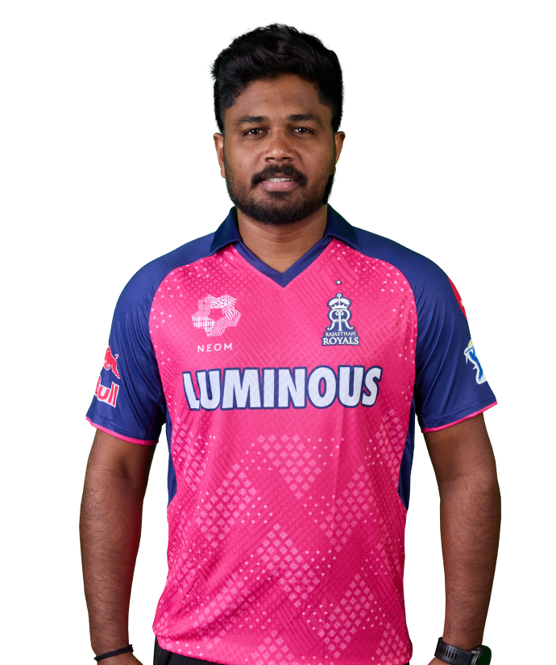
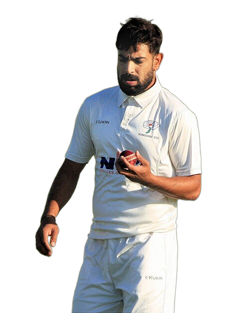

AUDIT • T20 COHORT • SEASON 2
Qualified Batters
109 (HP≥30)
Qualified Bowlers
136 (HP≥30)
193,976 deliveries analysed across 837 matches & 891 unique players (38 anomalous balls excluded).
Records
Batting #1
WI • Pace Finisher • Certified Cohort
ORANGE RI CAP
66.84
Jason Holder (ID: 2633)


Mitchell Marsh
Best Bowler (61.86)

Sanju Samson
Rank #2 Bat (60.46)

Haris Rauf
Rank #2 Bowl (61.50)
HP ≥ 30 & NP ≥ 30 Balls (Min 5 Matches)
Batters vs Pool
Pool (891)
Qual (109)
Bowlers vs Pool
Pool (891)
Qual (136)
Match Phase Leverage
Squads — Certified Top 10
Click any player row to update the Records Spotlight
| Image | PlayerName | Team | Category | Type | Inspect |
|---|
Reliability Table
TOP BATTERS
| Logo | Player | ID | Rk | RI |
|---|
Pressure Performance Distribution & Scatter Matrix
Empirical Bayes Shrunk Performance under Extreme Leverage vs Normal Match Baseline
100% Certified Data